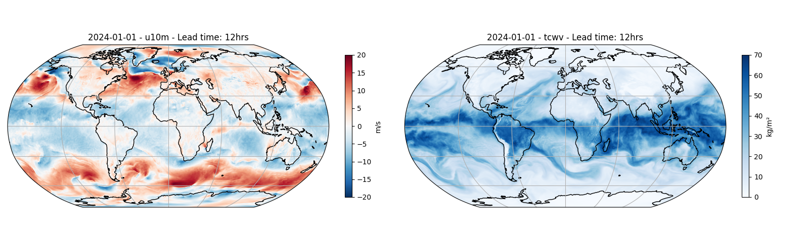

Note
Go to the end to download the full example code.
Running Atlas Inference#
Deterministic inference using the Atlas prognostic model.
This example demonstrates how to run a single-member forecast using the Atlas model, a generative AI weather model that uses stochastic interpolants and autoencoders to produce 6-hour forecasts on a 0.25 degree global grid. Atlas requires two input lead times (t-6h and t) and maintains an internal latent state for autoregressive rollouts.
In this example you will learn:
How to instantiate the Atlas prognostic model
How to run a single-member forecast with Atlas
How to visualize predicted 10m u-wind and total column water vapour
# /// script
# dependencies = [
# "torch==2.11.0", # Match lock file to avoid torch-harmonics issue
# "earth2studio[atlas] @ git+https://github.com/NVIDIA/earth2studio.git@0.16.0",
# "cartopy",
# "matplotlib",
# ]
# ///
We need the following:
Prognostic Model: Use the Atlas model
earth2studio.models.px.Atlas.Datasource: Pull data from the ARCO data source
earth2studio.data.ARCO.IO Backend: Save the outputs into a Zarr store
earth2studio.io.ZarrBackend.
Note
Atlas requires two input lead times (t-6h and t) to produce a forecast.
The deterministic workflow handles this automatically via the model’s
input_coords definition.
Warning
Atlas was trained on ERA5 data and in-filled NaNs in SST over landmasses with a value of 0 K using the ERA5 land-sea mask. If you are using a different SST dataset, you will need to in-fill the NaNs using the appropriate land-sea mask.
import os
os.makedirs("outputs", exist_ok=True)
# Performance optimization for Atlas model
# This is on by default in NGC containers, but other environments may need to set it manually.
os.environ["TORCH_ALLOW_TF32_CUBLAS_OVERRIDE"] = "1"
from dotenv import load_dotenv
load_dotenv() # TODO: make common example prep function
import numpy as np
import torch
from earth2studio.data import ARCO
from earth2studio.data.utils import fetch_data
from earth2studio.io import ZarrBackend
from earth2studio.models.px import Atlas
# Load the default model package which downloads the checkpoint from HuggingFace
package = Atlas.load_default_package()
model = Atlas.load_model(package)
# Create the data source
data = ARCO()
# Create the IO handler
io = ZarrBackend()
Downloading config.json: 0%| | 0.00/2.16k [00:00<?, ?B/s]
Downloading config.json: 100%|██████████| 2.16k/2.16k [00:00<00:00, 11.2kB/s]
Downloading config.json: 100%|██████████| 2.16k/2.16k [00:00<00:00, 11.1kB/s]
Downloading model_best.mdlus: 0%| | 0.00/7.38G [00:00<?, ?B/s]
Downloading model_best.mdlus: 0%| | 10.0M/7.38G [00:00<02:39, 49.8MB/s]
Downloading model_best.mdlus: 1%| | 40.0M/7.38G [00:00<00:51, 154MB/s]
Downloading model_best.mdlus: 1%| | 70.0M/7.38G [00:00<00:37, 210MB/s]
Downloading model_best.mdlus: 1%|▏ | 100M/7.38G [00:00<00:32, 244MB/s]
Downloading model_best.mdlus: 2%|▏ | 140M/7.38G [00:00<00:27, 278MB/s]
Downloading model_best.mdlus: 2%|▏ | 180M/7.38G [00:00<00:25, 303MB/s]
Downloading model_best.mdlus: 3%|▎ | 220M/7.38G [00:00<00:23, 321MB/s]
Downloading model_best.mdlus: 3%|▎ | 260M/7.38G [00:00<00:23, 333MB/s]
Downloading model_best.mdlus: 4%|▍ | 300M/7.38G [00:01<00:22, 346MB/s]
Downloading model_best.mdlus: 4%|▍ | 340M/7.38G [00:01<00:21, 359MB/s]
Downloading model_best.mdlus: 5%|▌ | 380M/7.38G [00:01<00:20, 372MB/s]
Downloading model_best.mdlus: 6%|▌ | 420M/7.38G [00:01<00:19, 378MB/s]
Downloading model_best.mdlus: 6%|▌ | 460M/7.38G [00:01<00:19, 386MB/s]
Downloading model_best.mdlus: 7%|▋ | 500M/7.38G [00:01<00:18, 390MB/s]
Downloading model_best.mdlus: 7%|▋ | 540M/7.38G [00:01<00:18, 388MB/s]
Downloading model_best.mdlus: 8%|▊ | 580M/7.38G [00:01<00:18, 391MB/s]
Downloading model_best.mdlus: 8%|▊ | 620M/7.38G [00:01<00:18, 393MB/s]
Downloading model_best.mdlus: 9%|▊ | 660M/7.38G [00:02<00:18, 388MB/s]
Downloading model_best.mdlus: 9%|▉ | 700M/7.38G [00:02<00:18, 386MB/s]
Downloading model_best.mdlus: 10%|▉ | 740M/7.38G [00:02<00:18, 389MB/s]
Downloading model_best.mdlus: 10%|█ | 780M/7.38G [00:02<00:18, 391MB/s]
Downloading model_best.mdlus: 11%|█ | 820M/7.38G [00:02<00:17, 393MB/s]
Downloading model_best.mdlus: 11%|█▏ | 860M/7.38G [00:02<00:17, 395MB/s]
Downloading model_best.mdlus: 12%|█▏ | 900M/7.38G [00:02<00:17, 395MB/s]
Downloading model_best.mdlus: 12%|█▏ | 940M/7.38G [00:02<00:17, 398MB/s]
Downloading model_best.mdlus: 13%|█▎ | 980M/7.38G [00:02<00:17, 394MB/s]
Downloading model_best.mdlus: 13%|█▎ | 1.00G/7.38G [00:03<00:17, 392MB/s]
Downloading model_best.mdlus: 14%|█▍ | 1.04G/7.38G [00:03<00:17, 389MB/s]
Downloading model_best.mdlus: 15%|█▍ | 1.07G/7.38G [00:03<00:17, 388MB/s]
Downloading model_best.mdlus: 15%|█▌ | 1.11G/7.38G [00:03<00:17, 377MB/s]
Downloading model_best.mdlus: 16%|█▌ | 1.15G/7.38G [00:03<00:18, 363MB/s]
Downloading model_best.mdlus: 16%|█▌ | 1.19G/7.38G [00:03<00:20, 322MB/s]
Downloading model_best.mdlus: 17%|█▋ | 1.23G/7.38G [00:03<00:19, 336MB/s]
Downloading model_best.mdlus: 17%|█▋ | 1.27G/7.38G [00:03<00:18, 348MB/s]
Downloading model_best.mdlus: 18%|█▊ | 1.31G/7.38G [00:03<00:18, 362MB/s]
Downloading model_best.mdlus: 18%|█▊ | 1.35G/7.38G [00:04<00:17, 369MB/s]
Downloading model_best.mdlus: 19%|█▉ | 1.39G/7.38G [00:04<00:16, 379MB/s]
Downloading model_best.mdlus: 19%|█▉ | 1.43G/7.38G [00:04<00:16, 385MB/s]
Downloading model_best.mdlus: 20%|█▉ | 1.46G/7.38G [00:04<00:16, 391MB/s]
Downloading model_best.mdlus: 20%|██ | 1.50G/7.38G [00:04<00:16, 390MB/s]
Downloading model_best.mdlus: 21%|██ | 1.54G/7.38G [00:04<00:16, 391MB/s]
Downloading model_best.mdlus: 21%|██▏ | 1.58G/7.38G [00:04<00:15, 393MB/s]
Downloading model_best.mdlus: 22%|██▏ | 1.62G/7.38G [00:04<00:16, 379MB/s]
Downloading model_best.mdlus: 23%|██▎ | 1.67G/7.38G [00:04<00:15, 396MB/s]
Downloading model_best.mdlus: 23%|██▎ | 1.72G/7.38G [00:05<00:14, 412MB/s]
Downloading model_best.mdlus: 24%|██▍ | 1.76G/7.38G [00:05<00:14, 410MB/s]
Downloading model_best.mdlus: 24%|██▍ | 1.80G/7.38G [00:05<00:15, 384MB/s]
Downloading model_best.mdlus: 25%|██▍ | 1.84G/7.38G [00:05<00:15, 373MB/s]
Downloading model_best.mdlus: 25%|██▌ | 1.88G/7.38G [00:05<00:16, 367MB/s]
Downloading model_best.mdlus: 26%|██▌ | 1.91G/7.38G [00:05<00:16, 366MB/s]
Downloading model_best.mdlus: 26%|██▋ | 1.95G/7.38G [00:05<00:16, 364MB/s]
Downloading model_best.mdlus: 27%|██▋ | 1.99G/7.38G [00:05<00:16, 349MB/s]
Downloading model_best.mdlus: 28%|██▊ | 2.03G/7.38G [00:06<00:16, 352MB/s]
Downloading model_best.mdlus: 28%|██▊ | 2.07G/7.38G [00:06<00:15, 358MB/s]
Downloading model_best.mdlus: 29%|██▊ | 2.11G/7.38G [00:06<00:16, 353MB/s]
Downloading model_best.mdlus: 29%|██▉ | 2.15G/7.38G [00:06<00:15, 356MB/s]
Downloading model_best.mdlus: 30%|██▉ | 2.19G/7.38G [00:06<00:15, 359MB/s]
Downloading model_best.mdlus: 30%|███ | 2.23G/7.38G [00:06<00:15, 368MB/s]
Downloading model_best.mdlus: 31%|███ | 2.28G/7.38G [00:06<00:14, 386MB/s]
Downloading model_best.mdlus: 31%|███▏ | 2.32G/7.38G [00:06<00:13, 400MB/s]
Downloading model_best.mdlus: 32%|███▏ | 2.37G/7.38G [00:06<00:13, 408MB/s]
Downloading model_best.mdlus: 33%|███▎ | 2.42G/7.38G [00:07<00:12, 414MB/s]
Downloading model_best.mdlus: 33%|███▎ | 2.46G/7.38G [00:07<00:12, 414MB/s]
Downloading model_best.mdlus: 34%|███▍ | 2.51G/7.38G [00:07<00:12, 417MB/s]
Downloading model_best.mdlus: 35%|███▍ | 2.55G/7.38G [00:07<00:12, 416MB/s]
Downloading model_best.mdlus: 35%|███▌ | 2.59G/7.38G [00:07<00:12, 416MB/s]
Downloading model_best.mdlus: 36%|███▌ | 2.63G/7.38G [00:07<00:12, 417MB/s]
Downloading model_best.mdlus: 36%|███▌ | 2.68G/7.38G [00:07<00:12, 420MB/s]
Downloading model_best.mdlus: 37%|███▋ | 2.71G/7.38G [00:07<00:12, 397MB/s]
Downloading model_best.mdlus: 37%|███▋ | 2.75G/7.38G [00:08<00:13, 357MB/s]
Downloading model_best.mdlus: 38%|███▊ | 2.79G/7.38G [00:08<00:14, 348MB/s]
Downloading model_best.mdlus: 38%|███▊ | 2.83G/7.38G [00:08<00:13, 361MB/s]
Downloading model_best.mdlus: 39%|███▉ | 2.87G/7.38G [00:08<00:13, 370MB/s]
Downloading model_best.mdlus: 39%|███▉ | 2.91G/7.38G [00:08<00:12, 379MB/s]
Downloading model_best.mdlus: 40%|███▉ | 2.95G/7.38G [00:08<00:12, 385MB/s]
Downloading model_best.mdlus: 40%|████ | 2.99G/7.38G [00:08<00:13, 352MB/s]
Downloading model_best.mdlus: 41%|████ | 3.03G/7.38G [00:08<00:13, 335MB/s]
Downloading model_best.mdlus: 42%|████▏ | 3.07G/7.38G [00:08<00:13, 332MB/s]
Downloading model_best.mdlus: 42%|████▏ | 3.11G/7.38G [00:09<00:13, 341MB/s]
Downloading model_best.mdlus: 43%|████▎ | 3.14G/7.38G [00:09<00:16, 274MB/s]
Downloading model_best.mdlus: 43%|████▎ | 3.17G/7.38G [00:09<00:16, 278MB/s]
Downloading model_best.mdlus: 44%|████▎ | 3.21G/7.38G [00:09<00:14, 306MB/s]
Downloading model_best.mdlus: 44%|████▍ | 3.25G/7.38G [00:09<00:13, 334MB/s]
Downloading model_best.mdlus: 45%|████▍ | 3.30G/7.38G [00:09<00:11, 368MB/s]
Downloading model_best.mdlus: 45%|████▌ | 3.35G/7.38G [00:09<00:11, 381MB/s]
Downloading model_best.mdlus: 46%|████▌ | 3.39G/7.38G [00:10<00:12, 349MB/s]
Downloading model_best.mdlus: 47%|████▋ | 3.44G/7.38G [00:10<00:11, 376MB/s]
Downloading model_best.mdlus: 47%|████▋ | 3.48G/7.38G [00:10<00:16, 260MB/s]
Downloading model_best.mdlus: 48%|████▊ | 3.52G/7.38G [00:10<00:15, 276MB/s]
Downloading model_best.mdlus: 48%|████▊ | 3.55G/7.38G [00:10<00:14, 288MB/s]
Downloading model_best.mdlus: 49%|████▊ | 3.59G/7.38G [00:10<00:13, 299MB/s]
Downloading model_best.mdlus: 49%|████▉ | 3.63G/7.38G [00:10<00:13, 307MB/s]
Downloading model_best.mdlus: 50%|████▉ | 3.67G/7.38G [00:11<00:12, 311MB/s]
Downloading model_best.mdlus: 50%|█████ | 3.71G/7.38G [00:11<00:12, 313MB/s]
Downloading model_best.mdlus: 51%|█████ | 3.75G/7.38G [00:11<00:12, 314MB/s]
Downloading model_best.mdlus: 51%|█████▏ | 3.79G/7.38G [00:11<00:12, 316MB/s]
Downloading model_best.mdlus: 52%|█████▏ | 3.83G/7.38G [00:11<00:12, 318MB/s]
Downloading model_best.mdlus: 52%|█████▏ | 3.87G/7.38G [00:11<00:11, 329MB/s]
Downloading model_best.mdlus: 53%|█████▎ | 3.91G/7.38G [00:11<00:11, 323MB/s]
Downloading model_best.mdlus: 53%|█████▎ | 3.95G/7.38G [00:11<00:10, 342MB/s]
Downloading model_best.mdlus: 54%|█████▍ | 3.98G/7.38G [00:12<00:10, 355MB/s]
Downloading model_best.mdlus: 54%|█████▍ | 4.02G/7.38G [00:12<00:09, 370MB/s]
Downloading model_best.mdlus: 55%|█████▌ | 4.06G/7.38G [00:12<00:09, 380MB/s]
Downloading model_best.mdlus: 56%|█████▌ | 4.10G/7.38G [00:12<00:09, 376MB/s]
Downloading model_best.mdlus: 56%|█████▌ | 4.14G/7.38G [00:12<00:09, 376MB/s]
Downloading model_best.mdlus: 57%|█████▋ | 4.18G/7.38G [00:12<00:09, 374MB/s]
Downloading model_best.mdlus: 57%|█████▋ | 4.22G/7.38G [00:12<00:09, 375MB/s]
Downloading model_best.mdlus: 58%|█████▊ | 4.26G/7.38G [00:12<00:08, 373MB/s]
Downloading model_best.mdlus: 58%|█████▊ | 4.30G/7.38G [00:12<00:08, 369MB/s]
Downloading model_best.mdlus: 59%|█████▊ | 4.34G/7.38G [00:13<00:08, 364MB/s]
Downloading model_best.mdlus: 59%|█████▉ | 4.38G/7.38G [00:13<00:09, 359MB/s]
Downloading model_best.mdlus: 60%|█████▉ | 4.41G/7.38G [00:13<00:09, 345MB/s]
Downloading model_best.mdlus: 60%|██████ | 4.46G/7.38G [00:13<00:08, 377MB/s]
Downloading model_best.mdlus: 61%|██████ | 4.51G/7.38G [00:13<00:07, 398MB/s]
Downloading model_best.mdlus: 62%|██████▏ | 4.56G/7.38G [00:13<00:07, 406MB/s]
Downloading model_best.mdlus: 62%|██████▏ | 4.60G/7.38G [00:13<00:07, 406MB/s]
Downloading model_best.mdlus: 63%|██████▎ | 4.65G/7.38G [00:13<00:07, 418MB/s]
Downloading model_best.mdlus: 64%|██████▎ | 4.70G/7.38G [00:14<00:06, 426MB/s]
Downloading model_best.mdlus: 64%|██████▍ | 4.75G/7.38G [00:14<00:07, 400MB/s]
Downloading model_best.mdlus: 65%|██████▍ | 4.79G/7.38G [00:14<00:06, 405MB/s]
Downloading model_best.mdlus: 65%|██████▌ | 4.83G/7.38G [00:14<00:06, 414MB/s]
Downloading model_best.mdlus: 66%|██████▌ | 4.88G/7.38G [00:14<00:06, 424MB/s]
Downloading model_best.mdlus: 67%|██████▋ | 4.93G/7.38G [00:14<00:06, 420MB/s]
Downloading model_best.mdlus: 67%|██████▋ | 4.98G/7.38G [00:14<00:06, 427MB/s]
Downloading model_best.mdlus: 68%|██████▊ | 5.03G/7.38G [00:14<00:05, 433MB/s]
Downloading model_best.mdlus: 69%|██████▉ | 5.08G/7.38G [00:14<00:05, 436MB/s]
Downloading model_best.mdlus: 69%|██████▉ | 5.13G/7.38G [00:15<00:05, 440MB/s]
Downloading model_best.mdlus: 70%|███████ | 5.18G/7.38G [00:15<00:06, 386MB/s]
Downloading model_best.mdlus: 71%|███████ | 5.21G/7.38G [00:15<00:06, 364MB/s]
Downloading model_best.mdlus: 71%|███████ | 5.25G/7.38G [00:15<00:06, 352MB/s]
Downloading model_best.mdlus: 72%|███████▏ | 5.29G/7.38G [00:15<00:09, 239MB/s]
Downloading model_best.mdlus: 72%|███████▏ | 5.33G/7.38G [00:15<00:08, 269MB/s]
Downloading model_best.mdlus: 73%|███████▎ | 5.37G/7.38G [00:16<00:07, 297MB/s]
Downloading model_best.mdlus: 73%|███████▎ | 5.41G/7.38G [00:16<00:06, 321MB/s]
Downloading model_best.mdlus: 74%|███████▍ | 5.45G/7.38G [00:16<00:06, 340MB/s]
Downloading model_best.mdlus: 74%|███████▍ | 5.49G/7.38G [00:16<00:05, 355MB/s]
Downloading model_best.mdlus: 75%|███████▍ | 5.53G/7.38G [00:16<00:05, 368MB/s]
Downloading model_best.mdlus: 75%|███████▌ | 5.57G/7.38G [00:16<00:05, 379MB/s]
Downloading model_best.mdlus: 76%|███████▌ | 5.61G/7.38G [00:16<00:04, 387MB/s]
Downloading model_best.mdlus: 76%|███████▋ | 5.64G/7.38G [00:16<00:05, 370MB/s]
Downloading model_best.mdlus: 77%|███████▋ | 5.68G/7.38G [00:16<00:05, 339MB/s]
Downloading model_best.mdlus: 78%|███████▊ | 5.72G/7.38G [00:17<00:05, 339MB/s]
Downloading model_best.mdlus: 78%|███████▊ | 5.76G/7.38G [00:17<00:04, 353MB/s]
Downloading model_best.mdlus: 79%|███████▊ | 5.80G/7.38G [00:17<00:04, 365MB/s]
Downloading model_best.mdlus: 79%|███████▉ | 5.84G/7.38G [00:17<00:04, 375MB/s]
Downloading model_best.mdlus: 80%|███████▉ | 5.88G/7.38G [00:17<00:04, 383MB/s]
Downloading model_best.mdlus: 80%|████████ | 5.92G/7.38G [00:17<00:04, 388MB/s]
Downloading model_best.mdlus: 81%|████████ | 5.96G/7.38G [00:17<00:04, 364MB/s]
Downloading model_best.mdlus: 81%|████████ | 6.00G/7.38G [00:17<00:04, 335MB/s]
Downloading model_best.mdlus: 82%|████████▏ | 6.04G/7.38G [00:18<00:04, 323MB/s]
Downloading model_best.mdlus: 82%|████████▏ | 6.07G/7.38G [00:18<00:04, 343MB/s]
Downloading model_best.mdlus: 83%|████████▎ | 6.12G/7.38G [00:18<00:03, 369MB/s]
Downloading model_best.mdlus: 84%|████████▎ | 6.17G/7.38G [00:18<00:03, 388MB/s]
Downloading model_best.mdlus: 84%|████████▍ | 6.22G/7.38G [00:18<00:03, 400MB/s]
Downloading model_best.mdlus: 85%|████████▍ | 6.26G/7.38G [00:18<00:02, 405MB/s]
Downloading model_best.mdlus: 85%|████████▌ | 6.31G/7.38G [00:18<00:02, 414MB/s]
Downloading model_best.mdlus: 86%|████████▌ | 6.36G/7.38G [00:18<00:02, 421MB/s]
Downloading model_best.mdlus: 87%|████████▋ | 6.41G/7.38G [00:18<00:02, 426MB/s]
Downloading model_best.mdlus: 87%|████████▋ | 6.46G/7.38G [00:19<00:02, 428MB/s]
Downloading model_best.mdlus: 88%|████████▊ | 6.50G/7.38G [00:19<00:02, 431MB/s]
Downloading model_best.mdlus: 89%|████████▊ | 6.55G/7.38G [00:19<00:02, 427MB/s]
Downloading model_best.mdlus: 89%|████████▉ | 6.60G/7.38G [00:19<00:02, 399MB/s]
Downloading model_best.mdlus: 90%|████████▉ | 6.64G/7.38G [00:19<00:01, 401MB/s]
Downloading model_best.mdlus: 90%|█████████ | 6.68G/7.38G [00:19<00:01, 400MB/s]
Downloading model_best.mdlus: 91%|█████████ | 6.72G/7.38G [00:19<00:01, 401MB/s]
Downloading model_best.mdlus: 92%|█████████▏| 6.76G/7.38G [00:19<00:01, 401MB/s]
Downloading model_best.mdlus: 92%|█████████▏| 6.80G/7.38G [00:20<00:01, 394MB/s]
Downloading model_best.mdlus: 93%|█████████▎| 6.84G/7.38G [00:20<00:01, 393MB/s]
Downloading model_best.mdlus: 93%|█████████▎| 6.88G/7.38G [00:20<00:01, 391MB/s]
Downloading model_best.mdlus: 94%|█████████▎| 6.91G/7.38G [00:20<00:01, 393MB/s]
Downloading model_best.mdlus: 94%|█████████▍| 6.95G/7.38G [00:20<00:01, 275MB/s]
Downloading model_best.mdlus: 95%|█████████▍| 6.99G/7.38G [00:20<00:01, 296MB/s]
Downloading model_best.mdlus: 95%|█████████▌| 7.03G/7.38G [00:20<00:01, 320MB/s]
Downloading model_best.mdlus: 96%|█████████▌| 7.07G/7.38G [00:20<00:00, 341MB/s]
Downloading model_best.mdlus: 96%|█████████▋| 7.11G/7.38G [00:21<00:00, 356MB/s]
Downloading model_best.mdlus: 97%|█████████▋| 7.15G/7.38G [00:21<00:00, 365MB/s]
Downloading model_best.mdlus: 97%|█████████▋| 7.19G/7.38G [00:21<00:00, 376MB/s]
Downloading model_best.mdlus: 98%|█████████▊| 7.23G/7.38G [00:21<00:00, 381MB/s]
Downloading model_best.mdlus: 98%|█████████▊| 7.27G/7.38G [00:21<00:00, 386MB/s]
Downloading model_best.mdlus: 99%|█████████▉| 7.30G/7.38G [00:21<00:00, 391MB/s]
Downloading model_best.mdlus: 99%|█████████▉| 7.34G/7.38G [00:21<00:00, 395MB/s]
Downloading model_best.mdlus: 100%|█████████▉| 7.38G/7.38G [00:21<00:00, 400MB/s]
Downloading model_best.mdlus: 100%|██████████| 7.38G/7.38G [00:21<00:00, 364MB/s]
Downloading data_processor_best.mdlus: 0%| | 0.00/11.9M [00:00<?, ?B/s]
Downloading data_processor_best.mdlus: 84%|████████▍ | 10.0M/11.9M [00:00<00:00, 68.8MB/s]
Downloading data_processor_best.mdlus: 100%|██████████| 11.9M/11.9M [00:00<00:00, 78.0MB/s]
Downloading model_best.mdlus: 0%| | 0.00/9.19G [00:00<?, ?B/s]
Downloading model_best.mdlus: 0%| | 10.0M/9.19G [00:00<02:42, 60.7MB/s]
Downloading model_best.mdlus: 1%| | 50.0M/9.19G [00:00<00:48, 203MB/s]
Downloading model_best.mdlus: 1%| | 90.0M/9.19G [00:00<00:34, 282MB/s]
Downloading model_best.mdlus: 1%|▏ | 130M/9.19G [00:00<00:29, 328MB/s]
Downloading model_best.mdlus: 2%|▏ | 170M/9.19G [00:00<00:27, 358MB/s]
Downloading model_best.mdlus: 2%|▏ | 210M/9.19G [00:00<00:29, 331MB/s]
Downloading model_best.mdlus: 3%|▎ | 250M/9.19G [00:00<00:29, 329MB/s]
Downloading model_best.mdlus: 3%|▎ | 290M/9.19G [00:00<00:28, 337MB/s]
Downloading model_best.mdlus: 4%|▎ | 330M/9.19G [00:01<00:27, 340MB/s]
Downloading model_best.mdlus: 4%|▍ | 370M/9.19G [00:01<00:27, 342MB/s]
Downloading model_best.mdlus: 4%|▍ | 410M/9.19G [00:01<00:27, 344MB/s]
Downloading model_best.mdlus: 5%|▍ | 450M/9.19G [00:01<00:27, 339MB/s]
Downloading model_best.mdlus: 5%|▌ | 490M/9.19G [00:01<00:28, 332MB/s]
Downloading model_best.mdlus: 6%|▌ | 530M/9.19G [00:01<00:28, 327MB/s]
Downloading model_best.mdlus: 6%|▌ | 570M/9.19G [00:01<00:28, 321MB/s]
Downloading model_best.mdlus: 6%|▋ | 610M/9.19G [00:02<00:29, 318MB/s]
Downloading model_best.mdlus: 7%|▋ | 650M/9.19G [00:02<00:29, 313MB/s]
Downloading model_best.mdlus: 7%|▋ | 690M/9.19G [00:02<00:28, 317MB/s]
Downloading model_best.mdlus: 8%|▊ | 730M/9.19G [00:02<00:28, 321MB/s]
Downloading model_best.mdlus: 8%|▊ | 770M/9.19G [00:02<00:27, 333MB/s]
Downloading model_best.mdlus: 9%|▊ | 810M/9.19G [00:02<00:26, 344MB/s]
Downloading model_best.mdlus: 9%|▉ | 850M/9.19G [00:02<00:25, 351MB/s]
Downloading model_best.mdlus: 9%|▉ | 890M/9.19G [00:02<00:25, 357MB/s]
Downloading model_best.mdlus: 10%|▉ | 930M/9.19G [00:02<00:24, 363MB/s]
Downloading model_best.mdlus: 10%|█ | 970M/9.19G [00:03<00:24, 359MB/s]
Downloading model_best.mdlus: 11%|█ | 0.99G/9.19G [00:03<00:25, 344MB/s]
Downloading model_best.mdlus: 11%|█ | 1.03G/9.19G [00:03<00:26, 334MB/s]
Downloading model_best.mdlus: 12%|█▏ | 1.06G/9.19G [00:03<00:25, 337MB/s]
Downloading model_best.mdlus: 12%|█▏ | 1.11G/9.19G [00:03<00:23, 364MB/s]
Downloading model_best.mdlus: 13%|█▎ | 1.16G/9.19G [00:03<00:22, 388MB/s]
Downloading model_best.mdlus: 13%|█▎ | 1.20G/9.19G [00:03<00:22, 375MB/s]
Downloading model_best.mdlus: 14%|█▎ | 1.25G/9.19G [00:03<00:21, 393MB/s]
Downloading model_best.mdlus: 14%|█▍ | 1.30G/9.19G [00:04<00:21, 403MB/s]
Downloading model_best.mdlus: 15%|█▍ | 1.35G/9.19G [00:04<00:20, 417MB/s]
Downloading model_best.mdlus: 15%|█▌ | 1.40G/9.19G [00:04<00:19, 429MB/s]
Downloading model_best.mdlus: 16%|█▌ | 1.45G/9.19G [00:04<00:20, 415MB/s]
Downloading model_best.mdlus: 16%|█▌ | 1.48G/9.19G [00:04<00:20, 411MB/s]
Downloading model_best.mdlus: 17%|█▋ | 1.52G/9.19G [00:04<00:19, 412MB/s]
Downloading model_best.mdlus: 17%|█▋ | 1.56G/9.19G [00:04<00:19, 410MB/s]
Downloading model_best.mdlus: 17%|█▋ | 1.60G/9.19G [00:04<00:19, 411MB/s]
Downloading model_best.mdlus: 18%|█▊ | 1.64G/9.19G [00:04<00:19, 409MB/s]
Downloading model_best.mdlus: 18%|█▊ | 1.68G/9.19G [00:05<00:19, 409MB/s]
Downloading model_best.mdlus: 19%|█▊ | 1.72G/9.19G [00:05<00:19, 411MB/s]
Downloading model_best.mdlus: 19%|█▉ | 1.76G/9.19G [00:05<00:19, 410MB/s]
Downloading model_best.mdlus: 20%|█▉ | 1.80G/9.19G [00:05<00:19, 405MB/s]
Downloading model_best.mdlus: 20%|█▉ | 1.84G/9.19G [00:05<00:19, 401MB/s]
Downloading model_best.mdlus: 20%|██ | 1.88G/9.19G [00:05<00:19, 398MB/s]
Downloading model_best.mdlus: 21%|██ | 1.91G/9.19G [00:05<00:19, 400MB/s]
Downloading model_best.mdlus: 21%|██ | 1.95G/9.19G [00:05<00:19, 402MB/s]
Downloading model_best.mdlus: 22%|██▏ | 1.99G/9.19G [00:05<00:19, 405MB/s]
Downloading model_best.mdlus: 22%|██▏ | 2.03G/9.19G [00:06<00:19, 396MB/s]
Downloading model_best.mdlus: 23%|██▎ | 2.07G/9.19G [00:06<00:20, 382MB/s]
Downloading model_best.mdlus: 23%|██▎ | 2.11G/9.19G [00:06<00:19, 382MB/s]
Downloading model_best.mdlus: 23%|██▎ | 2.15G/9.19G [00:06<00:20, 375MB/s]
Downloading model_best.mdlus: 24%|██▍ | 2.19G/9.19G [00:06<00:19, 378MB/s]
Downloading model_best.mdlus: 24%|██▍ | 2.23G/9.19G [00:06<00:19, 386MB/s]
Downloading model_best.mdlus: 25%|██▍ | 2.27G/9.19G [00:06<00:18, 392MB/s]
Downloading model_best.mdlus: 25%|██▌ | 2.30G/9.19G [00:06<00:18, 396MB/s]
Downloading model_best.mdlus: 25%|██▌ | 2.34G/9.19G [00:06<00:19, 380MB/s]
Downloading model_best.mdlus: 26%|██▌ | 2.38G/9.19G [00:07<00:20, 358MB/s]
Downloading model_best.mdlus: 26%|██▋ | 2.42G/9.19G [00:07<00:20, 361MB/s]
Downloading model_best.mdlus: 27%|██▋ | 2.46G/9.19G [00:07<00:19, 362MB/s]
Downloading model_best.mdlus: 27%|██▋ | 2.50G/9.19G [00:07<00:19, 365MB/s]
Downloading model_best.mdlus: 28%|██▊ | 2.54G/9.19G [00:07<00:19, 371MB/s]
Downloading model_best.mdlus: 28%|██▊ | 2.58G/9.19G [00:07<00:18, 374MB/s]
Downloading model_best.mdlus: 28%|██▊ | 2.62G/9.19G [00:07<00:18, 376MB/s]
Downloading model_best.mdlus: 29%|██▉ | 2.66G/9.19G [00:07<00:18, 380MB/s]
Downloading model_best.mdlus: 29%|██▉ | 2.70G/9.19G [00:07<00:18, 381MB/s]
Downloading model_best.mdlus: 30%|██▉ | 2.73G/9.19G [00:08<00:18, 376MB/s]
Downloading model_best.mdlus: 30%|███ | 2.77G/9.19G [00:08<00:18, 371MB/s]
Downloading model_best.mdlus: 31%|███ | 2.81G/9.19G [00:08<00:18, 369MB/s]
Downloading model_best.mdlus: 31%|███ | 2.85G/9.19G [00:08<00:18, 366MB/s]
Downloading model_best.mdlus: 31%|███▏ | 2.89G/9.19G [00:08<00:18, 364MB/s]
Downloading model_best.mdlus: 32%|███▏ | 2.93G/9.19G [00:08<00:18, 359MB/s]
Downloading model_best.mdlus: 32%|███▏ | 2.97G/9.19G [00:08<00:18, 357MB/s]
Downloading model_best.mdlus: 33%|███▎ | 3.01G/9.19G [00:08<00:18, 358MB/s]
Downloading model_best.mdlus: 33%|███▎ | 3.05G/9.19G [00:08<00:18, 355MB/s]
Downloading model_best.mdlus: 34%|███▎ | 3.09G/9.19G [00:09<00:18, 356MB/s]
Downloading model_best.mdlus: 34%|███▍ | 3.12G/9.19G [00:09<00:18, 356MB/s]
Downloading model_best.mdlus: 34%|███▍ | 3.16G/9.19G [00:09<00:18, 358MB/s]
Downloading model_best.mdlus: 35%|███▍ | 3.20G/9.19G [00:09<00:18, 355MB/s]
Downloading model_best.mdlus: 35%|███▌ | 3.24G/9.19G [00:09<00:17, 356MB/s]
Downloading model_best.mdlus: 36%|███▌ | 3.28G/9.19G [00:09<00:17, 357MB/s]
Downloading model_best.mdlus: 36%|███▌ | 3.32G/9.19G [00:09<00:17, 358MB/s]
Downloading model_best.mdlus: 37%|███▋ | 3.36G/9.19G [00:09<00:17, 365MB/s]
Downloading model_best.mdlus: 37%|███▋ | 3.40G/9.19G [00:10<00:16, 369MB/s]
Downloading model_best.mdlus: 37%|███▋ | 3.44G/9.19G [00:10<00:19, 314MB/s]
Downloading model_best.mdlus: 38%|███▊ | 3.48G/9.19G [00:10<00:24, 250MB/s]
Downloading model_best.mdlus: 38%|███▊ | 3.52G/9.19G [00:10<00:22, 274MB/s]
Downloading model_best.mdlus: 39%|███▊ | 3.55G/9.19G [00:10<00:20, 297MB/s]
Downloading model_best.mdlus: 39%|███▉ | 3.59G/9.19G [00:10<00:18, 320MB/s]
Downloading model_best.mdlus: 40%|███▉ | 3.63G/9.19G [00:10<00:17, 334MB/s]
Downloading model_best.mdlus: 40%|███▉ | 3.67G/9.19G [00:11<00:16, 349MB/s]
Downloading model_best.mdlus: 40%|████ | 3.71G/9.19G [00:11<00:16, 361MB/s]
Downloading model_best.mdlus: 41%|████ | 3.75G/9.19G [00:11<00:15, 368MB/s]
Downloading model_best.mdlus: 41%|████ | 3.79G/9.19G [00:11<00:15, 376MB/s]
Downloading model_best.mdlus: 42%|████▏ | 3.83G/9.19G [00:11<00:15, 381MB/s]
Downloading model_best.mdlus: 42%|████▏ | 3.87G/9.19G [00:11<00:14, 383MB/s]
Downloading model_best.mdlus: 42%|████▏ | 3.91G/9.19G [00:11<00:14, 383MB/s]
Downloading model_best.mdlus: 43%|████▎ | 3.95G/9.19G [00:11<00:14, 383MB/s]
Downloading model_best.mdlus: 43%|████▎ | 3.98G/9.19G [00:11<00:14, 385MB/s]
Downloading model_best.mdlus: 44%|████▍ | 4.02G/9.19G [00:11<00:14, 388MB/s]
Downloading model_best.mdlus: 44%|████▍ | 4.06G/9.19G [00:12<00:14, 390MB/s]
Downloading model_best.mdlus: 45%|████▍ | 4.10G/9.19G [00:12<00:13, 392MB/s]
Downloading model_best.mdlus: 45%|████▌ | 4.14G/9.19G [00:12<00:13, 393MB/s]
Downloading model_best.mdlus: 45%|████▌ | 4.18G/9.19G [00:12<00:15, 359MB/s]
Downloading model_best.mdlus: 46%|████▌ | 4.22G/9.19G [00:12<00:15, 349MB/s]
Downloading model_best.mdlus: 46%|████▋ | 4.27G/9.19G [00:12<00:13, 379MB/s]
Downloading model_best.mdlus: 47%|████▋ | 4.31G/9.19G [00:12<00:13, 386MB/s]
Downloading model_best.mdlus: 47%|████▋ | 4.35G/9.19G [00:12<00:13, 393MB/s]
Downloading model_best.mdlus: 48%|████▊ | 4.38G/9.19G [00:13<00:14, 368MB/s]
Downloading model_best.mdlus: 48%|████▊ | 4.42G/9.19G [00:13<00:14, 346MB/s]
Downloading model_best.mdlus: 49%|████▊ | 4.46G/9.19G [00:13<00:14, 353MB/s]
Downloading model_best.mdlus: 49%|████▉ | 4.50G/9.19G [00:13<00:14, 340MB/s]
Downloading model_best.mdlus: 49%|████▉ | 4.54G/9.19G [00:13<00:14, 349MB/s]
Downloading model_best.mdlus: 50%|████▉ | 4.58G/9.19G [00:13<00:14, 348MB/s]
Downloading model_best.mdlus: 50%|█████ | 4.62G/9.19G [00:13<00:14, 347MB/s]
Downloading model_best.mdlus: 51%|█████ | 4.66G/9.19G [00:13<00:13, 352MB/s]
Downloading model_best.mdlus: 51%|█████ | 4.70G/9.19G [00:13<00:13, 351MB/s]
Downloading model_best.mdlus: 52%|█████▏ | 4.74G/9.19G [00:14<00:13, 350MB/s]
Downloading model_best.mdlus: 52%|█████▏ | 4.78G/9.19G [00:14<00:15, 313MB/s]
Downloading model_best.mdlus: 52%|█████▏ | 4.81G/9.19G [00:14<00:15, 305MB/s]
Downloading model_best.mdlus: 53%|█████▎ | 4.86G/9.19G [00:14<00:13, 341MB/s]
Downloading model_best.mdlus: 53%|█████▎ | 4.91G/9.19G [00:14<00:12, 369MB/s]
Downloading model_best.mdlus: 54%|█████▍ | 4.96G/9.19G [00:14<00:11, 391MB/s]
Downloading model_best.mdlus: 55%|█████▍ | 5.01G/9.19G [00:14<00:11, 407MB/s]
Downloading model_best.mdlus: 55%|█████▌ | 5.06G/9.19G [00:15<00:10, 421MB/s]
Downloading model_best.mdlus: 56%|█████▌ | 5.11G/9.19G [00:15<00:10, 431MB/s]
Downloading model_best.mdlus: 56%|█████▌ | 5.16G/9.19G [00:15<00:10, 429MB/s]
Downloading model_best.mdlus: 57%|█████▋ | 5.21G/9.19G [00:15<00:09, 435MB/s]
Downloading model_best.mdlus: 57%|█████▋ | 5.25G/9.19G [00:15<00:09, 440MB/s]
Downloading model_best.mdlus: 58%|█████▊ | 5.30G/9.19G [00:15<00:09, 442MB/s]
Downloading model_best.mdlus: 58%|█████▊ | 5.35G/9.19G [00:15<00:09, 445MB/s]
Downloading model_best.mdlus: 59%|█████▉ | 5.40G/9.19G [00:15<00:09, 448MB/s]
Downloading model_best.mdlus: 59%|█████▉ | 5.45G/9.19G [00:15<00:08, 451MB/s]
Downloading model_best.mdlus: 60%|█████▉ | 5.50G/9.19G [00:16<00:10, 385MB/s]
Downloading model_best.mdlus: 60%|██████ | 5.54G/9.19G [00:16<00:10, 390MB/s]
Downloading model_best.mdlus: 61%|██████ | 5.58G/9.19G [00:16<00:09, 391MB/s]
Downloading model_best.mdlus: 61%|██████ | 5.62G/9.19G [00:16<00:09, 390MB/s]
Downloading model_best.mdlus: 62%|██████▏ | 5.65G/9.19G [00:16<00:09, 387MB/s]
Downloading model_best.mdlus: 62%|██████▏ | 5.69G/9.19G [00:16<00:09, 387MB/s]
Downloading model_best.mdlus: 62%|██████▏ | 5.73G/9.19G [00:16<00:09, 386MB/s]
Downloading model_best.mdlus: 63%|██████▎ | 5.77G/9.19G [00:16<00:09, 386MB/s]
Downloading model_best.mdlus: 63%|██████▎ | 5.81G/9.19G [00:16<00:09, 388MB/s]
Downloading model_best.mdlus: 64%|██████▎ | 5.85G/9.19G [00:17<00:09, 389MB/s]
Downloading model_best.mdlus: 64%|██████▍ | 5.89G/9.19G [00:17<00:09, 384MB/s]
Downloading model_best.mdlus: 64%|██████▍ | 5.93G/9.19G [00:17<00:09, 381MB/s]
Downloading model_best.mdlus: 65%|██████▍ | 5.97G/9.19G [00:17<00:09, 384MB/s]
Downloading model_best.mdlus: 65%|██████▌ | 6.01G/9.19G [00:17<00:08, 387MB/s]
Downloading model_best.mdlus: 66%|██████▌ | 6.04G/9.19G [00:17<00:08, 390MB/s]
Downloading model_best.mdlus: 66%|██████▌ | 6.08G/9.19G [00:17<00:08, 388MB/s]
Downloading model_best.mdlus: 67%|██████▋ | 6.12G/9.19G [00:17<00:08, 383MB/s]
Downloading model_best.mdlus: 67%|██████▋ | 6.16G/9.19G [00:17<00:08, 379MB/s]
Downloading model_best.mdlus: 67%|██████▋ | 6.20G/9.19G [00:18<00:08, 382MB/s]
Downloading model_best.mdlus: 68%|██████▊ | 6.24G/9.19G [00:18<00:08, 386MB/s]
Downloading model_best.mdlus: 68%|██████▊ | 6.28G/9.19G [00:18<00:08, 367MB/s]
Downloading model_best.mdlus: 69%|██████▊ | 6.32G/9.19G [00:18<00:08, 347MB/s]
Downloading model_best.mdlus: 69%|██████▉ | 6.36G/9.19G [00:18<00:08, 341MB/s]
Downloading model_best.mdlus: 70%|██████▉ | 6.40G/9.19G [00:18<00:08, 355MB/s]
Downloading model_best.mdlus: 70%|███████ | 6.44G/9.19G [00:18<00:08, 366MB/s]
Downloading model_best.mdlus: 70%|███████ | 6.47G/9.19G [00:18<00:07, 374MB/s]
Downloading model_best.mdlus: 71%|███████ | 6.51G/9.19G [00:19<00:07, 371MB/s]
Downloading model_best.mdlus: 71%|███████▏ | 6.55G/9.19G [00:19<00:07, 377MB/s]
Downloading model_best.mdlus: 72%|███████▏ | 6.59G/9.19G [00:19<00:07, 381MB/s]
Downloading model_best.mdlus: 72%|███████▏ | 6.63G/9.19G [00:19<00:07, 383MB/s]
Downloading model_best.mdlus: 73%|███████▎ | 6.67G/9.19G [00:19<00:07, 384MB/s]
Downloading model_best.mdlus: 73%|███████▎ | 6.71G/9.19G [00:19<00:06, 386MB/s]
Downloading model_best.mdlus: 73%|███████▎ | 6.75G/9.19G [00:19<00:06, 389MB/s]
Downloading model_best.mdlus: 74%|███████▍ | 6.79G/9.19G [00:19<00:06, 389MB/s]
Downloading model_best.mdlus: 74%|███████▍ | 6.83G/9.19G [00:19<00:06, 391MB/s]
Downloading model_best.mdlus: 75%|███████▍ | 6.88G/9.19G [00:20<00:06, 400MB/s]
Downloading model_best.mdlus: 75%|███████▌ | 6.91G/9.19G [00:20<00:06, 397MB/s]
Downloading model_best.mdlus: 76%|███████▌ | 6.95G/9.19G [00:20<00:06, 370MB/s]
Downloading model_best.mdlus: 76%|███████▌ | 6.99G/9.19G [00:20<00:06, 375MB/s]
Downloading model_best.mdlus: 76%|███████▋ | 7.03G/9.19G [00:20<00:08, 277MB/s]
Downloading model_best.mdlus: 77%|███████▋ | 7.07G/9.19G [00:20<00:07, 299MB/s]
Downloading model_best.mdlus: 77%|███████▋ | 7.11G/9.19G [00:20<00:07, 314MB/s]
Downloading model_best.mdlus: 78%|███████▊ | 7.15G/9.19G [00:20<00:06, 332MB/s]
Downloading model_best.mdlus: 78%|███████▊ | 7.19G/9.19G [00:21<00:06, 347MB/s]
Downloading model_best.mdlus: 79%|███████▊ | 7.23G/9.19G [00:21<00:05, 354MB/s]
Downloading model_best.mdlus: 79%|███████▉ | 7.27G/9.19G [00:21<00:05, 359MB/s]
Downloading model_best.mdlus: 79%|███████▉ | 7.30G/9.19G [00:21<00:05, 367MB/s]
Downloading model_best.mdlus: 80%|███████▉ | 7.34G/9.19G [00:21<00:05, 372MB/s]
Downloading model_best.mdlus: 80%|████████ | 7.38G/9.19G [00:21<00:05, 378MB/s]
Downloading model_best.mdlus: 81%|████████ | 7.42G/9.19G [00:21<00:04, 382MB/s]
Downloading model_best.mdlus: 81%|████████ | 7.46G/9.19G [00:21<00:04, 387MB/s]
Downloading model_best.mdlus: 82%|████████▏ | 7.50G/9.19G [00:21<00:04, 392MB/s]
Downloading model_best.mdlus: 82%|████████▏ | 7.54G/9.19G [00:22<00:04, 381MB/s]
Downloading model_best.mdlus: 82%|████████▏ | 7.58G/9.19G [00:22<00:04, 371MB/s]
Downloading model_best.mdlus: 83%|████████▎ | 7.62G/9.19G [00:22<00:04, 379MB/s]
Downloading model_best.mdlus: 83%|████████▎ | 7.66G/9.19G [00:22<00:04, 382MB/s]
Downloading model_best.mdlus: 84%|████████▎ | 7.70G/9.19G [00:22<00:04, 388MB/s]
Downloading model_best.mdlus: 84%|████████▍ | 7.73G/9.19G [00:22<00:04, 389MB/s]
Downloading model_best.mdlus: 85%|████████▍ | 7.77G/9.19G [00:22<00:03, 391MB/s]
Downloading model_best.mdlus: 85%|████████▍ | 7.81G/9.19G [00:22<00:03, 393MB/s]
Downloading model_best.mdlus: 85%|████████▌ | 7.85G/9.19G [00:22<00:03, 396MB/s]
Downloading model_best.mdlus: 86%|████████▌ | 7.89G/9.19G [00:23<00:03, 385MB/s]
Downloading model_best.mdlus: 86%|████████▋ | 7.93G/9.19G [00:23<00:03, 380MB/s]
Downloading model_best.mdlus: 87%|████████▋ | 7.97G/9.19G [00:23<00:03, 382MB/s]
Downloading model_best.mdlus: 87%|████████▋ | 8.01G/9.19G [00:23<00:03, 362MB/s]
Downloading model_best.mdlus: 88%|████████▊ | 8.05G/9.19G [00:23<00:03, 354MB/s]
Downloading model_best.mdlus: 88%|████████▊ | 8.09G/9.19G [00:23<00:03, 357MB/s]
Downloading model_best.mdlus: 88%|████████▊ | 8.12G/9.19G [00:23<00:03, 360MB/s]
Downloading model_best.mdlus: 89%|████████▉ | 8.16G/9.19G [00:23<00:03, 368MB/s]
Downloading model_best.mdlus: 89%|████████▉ | 8.20G/9.19G [00:23<00:02, 376MB/s]
Downloading model_best.mdlus: 90%|████████▉ | 8.24G/9.19G [00:24<00:02, 373MB/s]
Downloading model_best.mdlus: 90%|█████████ | 8.28G/9.19G [00:24<00:02, 380MB/s]
Downloading model_best.mdlus: 91%|█████████ | 8.32G/9.19G [00:24<00:02, 370MB/s]
Downloading model_best.mdlus: 91%|█████████ | 8.36G/9.19G [00:24<00:02, 336MB/s]
Downloading model_best.mdlus: 91%|█████████▏| 8.40G/9.19G [00:24<00:02, 311MB/s]
Downloading model_best.mdlus: 92%|█████████▏| 8.44G/9.19G [00:24<00:02, 312MB/s]
Downloading model_best.mdlus: 92%|█████████▏| 8.48G/9.19G [00:24<00:02, 304MB/s]
Downloading model_best.mdlus: 93%|█████████▎| 8.52G/9.19G [00:24<00:02, 329MB/s]
Downloading model_best.mdlus: 93%|█████████▎| 8.56G/9.19G [00:25<00:01, 362MB/s]
Downloading model_best.mdlus: 94%|█████████▎| 8.61G/9.19G [00:25<00:01, 388MB/s]
Downloading model_best.mdlus: 94%|█████████▍| 8.66G/9.19G [00:25<00:01, 403MB/s]
Downloading model_best.mdlus: 95%|█████████▍| 8.70G/9.19G [00:25<00:01, 404MB/s]
Downloading model_best.mdlus: 95%|█████████▌| 8.74G/9.19G [00:25<00:01, 406MB/s]
Downloading model_best.mdlus: 96%|█████████▌| 8.78G/9.19G [00:25<00:01, 408MB/s]
Downloading model_best.mdlus: 96%|█████████▌| 8.83G/9.19G [00:25<00:00, 416MB/s]
Downloading model_best.mdlus: 97%|█████████▋| 8.88G/9.19G [00:25<00:00, 420MB/s]
Downloading model_best.mdlus: 97%|█████████▋| 8.93G/9.19G [00:25<00:00, 422MB/s]
Downloading model_best.mdlus: 98%|█████████▊| 8.97G/9.19G [00:26<00:00, 428MB/s]
Downloading model_best.mdlus: 98%|█████████▊| 9.02G/9.19G [00:26<00:00, 435MB/s]
Downloading model_best.mdlus: 99%|█████████▊| 9.07G/9.19G [00:26<00:00, 442MB/s]
Downloading model_best.mdlus: 99%|█████████▉| 9.12G/9.19G [00:26<00:00, 407MB/s]
Downloading model_best.mdlus: 100%|█████████▉| 9.16G/9.19G [00:26<00:00, 371MB/s]
Downloading model_best.mdlus: 100%|██████████| 9.19G/9.19G [00:26<00:00, 369MB/s]
Downloading data_processor_best.mdlus: 0%| | 0.00/11.9M [00:00<?, ?B/s]
Downloading data_processor_best.mdlus: 84%|████████▍ | 10.0M/11.9M [00:00<00:00, 55.8MB/s]
Downloading data_processor_best.mdlus: 100%|██████████| 11.9M/11.9M [00:00<00:00, 63.1MB/s]
Manual Forward Pass#
For more control over the inference loop, Atlas can be called directly using
earth2studio.data.utils.fetch_data() for initial conditions and
earth2studio.models.px.Atlas.prep_next_input() to advance the sliding
window between steps. This is useful when you need access to intermediate tensors
or want to customize the rollout logic.
Note
For autoregressive rollouts longer than one step, prefer
create_iterator which correctly manages the internal latent state.
device = torch.device("cuda" if torch.cuda.is_available() else "cpu")
model = model.to(device)
# Get model input coordinate requirements
input_coords = model.input_coords()
# Fetch initial conditions matching the model's expected variables and lead times
time = np.array([np.datetime64("2024-01-01T00:00")])
x, coords = fetch_data(
source=data,
time=time,
variable=input_coords["variable"],
lead_time=input_coords["lead_time"],
device=device,
)
# Add a batch dimension
x = x.unsqueeze(0)
coords["batch"] = np.arange(1)
coords.move_to_end("batch", last=False)
# Run two forward steps manually
n_manual_steps = 2
for step in range(n_manual_steps):
y, y_coords = model(x, coords)
lead_hrs = y_coords["lead_time"][0] / np.timedelta64(1, "h")
print(f"Step {step + 1}: lead_time = {lead_hrs:.0f}h, shape = {y.shape}")
x, coords = model.prep_next_input(y, y_coords, x, coords)
2026-06-29 17:33:02.117 | DEBUG | earth2studio.data.arco:_async_init:128 - Using Multi-Storage Client for ARCO data access
Fetching ARCO data: 0%| | 0/15 [00:00<?, ?it/s]
2026-06-29 17:33:02.852 | DEBUG | earth2studio.data.utils:_make_local_details:1070 - Copying /gcp-public-data-arco-era5/ar/full_37-1h-0p25deg-chunk-1.zarr-v3/10m_v_component_of_wind/1086954.0.0 to local cache
Fetching ARCO data: 0%| | 0/15 [00:00<?, ?it/s]
2026-06-29 17:33:02.862 | DEBUG | earth2studio.data.utils:_make_local_details:1070 - Copying /gcp-public-data-arco-era5/ar/full_37-1h-0p25deg-chunk-1.zarr-v3/mean_sea_level_pressure/1086954.0.0 to local cache
Fetching ARCO data: 0%| | 0/15 [00:00<?, ?it/s]
2026-06-29 17:33:02.862 | DEBUG | earth2studio.data.utils:_make_local_details:1070 - Copying /gcp-public-data-arco-era5/ar/full_37-1h-0p25deg-chunk-1.zarr-v3/temperature/1086954.0.0.0 to local cache
Fetching ARCO data: 0%| | 0/15 [00:00<?, ?it/s]
2026-06-29 17:33:02.866 | DEBUG | earth2studio.data.utils:_make_local_details:1070 - Copying /gcp-public-data-arco-era5/ar/full_37-1h-0p25deg-chunk-1.zarr-v3/geopotential/1086954.0.0.0 to local cache
Fetching ARCO data: 0%| | 0/15 [00:00<?, ?it/s]
2026-06-29 17:33:02.868 | DEBUG | earth2studio.data.utils:_make_local_details:1070 - Copying /gcp-public-data-arco-era5/ar/full_37-1h-0p25deg-chunk-1.zarr-v3/total_precipitation/1086954.0.0 to local cache
Fetching ARCO data: 0%| | 0/15 [00:00<?, ?it/s]
2026-06-29 17:33:02.873 | DEBUG | earth2studio.data.utils:_make_local_details:1070 - Copying /gcp-public-data-arco-era5/ar/full_37-1h-0p25deg-chunk-1.zarr-v3/100m_v_component_of_wind/1086954.0.0 to local cache
Fetching ARCO data: 0%| | 0/15 [00:00<?, ?it/s]
2026-06-29 17:33:02.919 | DEBUG | earth2studio.data.utils:_make_local_details:1070 - Copying /gcp-public-data-arco-era5/ar/full_37-1h-0p25deg-chunk-1.zarr-v3/specific_humidity/1086954.0.0.0 to local cache
Fetching ARCO data: 0%| | 0/15 [00:00<?, ?it/s]
2026-06-29 17:33:02.932 | DEBUG | earth2studio.data.utils:_make_local_details:1070 - Copying /gcp-public-data-arco-era5/ar/full_37-1h-0p25deg-chunk-1.zarr-v3/100m_u_component_of_wind/1086954.0.0 to local cache
Fetching ARCO data: 0%| | 0/15 [00:00<?, ?it/s]
2026-06-29 17:33:02.935 | DEBUG | earth2studio.data.utils:_make_local_details:1070 - Copying /gcp-public-data-arco-era5/ar/full_37-1h-0p25deg-chunk-1.zarr-v3/10m_u_component_of_wind/1086954.0.0 to local cache
Fetching ARCO data: 0%| | 0/15 [00:00<?, ?it/s]
2026-06-29 17:33:02.940 | DEBUG | earth2studio.data.utils:_make_local_details:1070 - Copying /gcp-public-data-arco-era5/ar/full_37-1h-0p25deg-chunk-1.zarr-v3/2m_temperature/1086954.0.0 to local cache
Fetching ARCO data: 0%| | 0/15 [00:00<?, ?it/s]
2026-06-29 17:33:02.941 | DEBUG | earth2studio.data.utils:_make_local_details:1070 - Copying /gcp-public-data-arco-era5/ar/full_37-1h-0p25deg-chunk-1.zarr-v3/u_component_of_wind/1086954.0.0.0 to local cache
Fetching ARCO data: 0%| | 0/15 [00:00<?, ?it/s]
2026-06-29 17:33:02.944 | DEBUG | earth2studio.data.utils:_make_local_details:1070 - Copying /gcp-public-data-arco-era5/ar/full_37-1h-0p25deg-chunk-1.zarr-v3/sea_surface_temperature/1086954.0.0 to local cache
Fetching ARCO data: 0%| | 0/15 [00:00<?, ?it/s]
2026-06-29 17:33:02.944 | DEBUG | earth2studio.data.utils:_make_local_details:1070 - Copying /gcp-public-data-arco-era5/ar/full_37-1h-0p25deg-chunk-1.zarr-v3/total_column_water_vapour/1086954.0.0 to local cache
Fetching ARCO data: 0%| | 0/15 [00:00<?, ?it/s]
2026-06-29 17:33:02.947 | DEBUG | earth2studio.data.utils:_make_local_details:1070 - Copying /gcp-public-data-arco-era5/ar/full_37-1h-0p25deg-chunk-1.zarr-v3/surface_pressure/1086954.0.0 to local cache
Fetching ARCO data: 0%| | 0/15 [00:00<?, ?it/s]
2026-06-29 17:33:02.973 | DEBUG | earth2studio.data.utils:_make_local_details:1070 - Copying /gcp-public-data-arco-era5/ar/full_37-1h-0p25deg-chunk-1.zarr-v3/v_component_of_wind/1086954.0.0.0 to local cache
Fetching ARCO data: 0%| | 0/15 [00:00<?, ?it/s]
Fetching ARCO data: 7%|▋ | 1/15 [00:00<00:07, 1.98it/s]
Fetching ARCO data: 20%|██ | 3/15 [00:00<00:02, 5.45it/s]
Fetching ARCO data: 33%|███▎ | 5/15 [00:00<00:01, 5.61it/s]
Fetching ARCO data: 47%|████▋ | 7/15 [00:01<00:01, 7.76it/s]
Fetching ARCO data: 60%|██████ | 9/15 [00:01<00:00, 6.39it/s]
Fetching ARCO data: 67%|██████▋ | 10/15 [00:01<00:00, 5.08it/s]
Fetching ARCO data: 73%|███████▎ | 11/15 [00:02<00:01, 2.46it/s]
Fetching ARCO data: 87%|████████▋ | 13/15 [00:03<00:00, 2.55it/s]
Fetching ARCO data: 93%|█████████▎| 14/15 [00:03<00:00, 2.86it/s]
Fetching ARCO data: 100%|██████████| 15/15 [00:04<00:00, 2.39it/s]
Fetching ARCO data: 100%|██████████| 15/15 [00:04<00:00, 3.30it/s]
Fetching ARCO data: 0%| | 0/15 [00:00<?, ?it/s]
2026-06-29 17:33:07.397 | DEBUG | earth2studio.data.utils:_make_local_details:1070 - Copying /gcp-public-data-arco-era5/ar/full_37-1h-0p25deg-chunk-1.zarr-v3/mean_sea_level_pressure/1086960.0.0 to local cache
Fetching ARCO data: 0%| | 0/15 [00:00<?, ?it/s]
2026-06-29 17:33:07.400 | DEBUG | earth2studio.data.utils:_make_local_details:1070 - Copying /gcp-public-data-arco-era5/ar/full_37-1h-0p25deg-chunk-1.zarr-v3/temperature/1086960.0.0.0 to local cache
Fetching ARCO data: 0%| | 0/15 [00:00<?, ?it/s]
2026-06-29 17:33:07.403 | DEBUG | earth2studio.data.utils:_make_local_details:1070 - Copying /gcp-public-data-arco-era5/ar/full_37-1h-0p25deg-chunk-1.zarr-v3/geopotential/1086960.0.0.0 to local cache
Fetching ARCO data: 0%| | 0/15 [00:00<?, ?it/s]
2026-06-29 17:33:07.405 | DEBUG | earth2studio.data.utils:_make_local_details:1070 - Copying /gcp-public-data-arco-era5/ar/full_37-1h-0p25deg-chunk-1.zarr-v3/surface_pressure/1086960.0.0 to local cache
Fetching ARCO data: 0%| | 0/15 [00:00<?, ?it/s]
2026-06-29 17:33:07.409 | DEBUG | earth2studio.data.utils:_make_local_details:1070 - Copying /gcp-public-data-arco-era5/ar/full_37-1h-0p25deg-chunk-1.zarr-v3/2m_temperature/1086960.0.0 to local cache
Fetching ARCO data: 0%| | 0/15 [00:00<?, ?it/s]
2026-06-29 17:33:07.412 | DEBUG | earth2studio.data.utils:_make_local_details:1070 - Copying /gcp-public-data-arco-era5/ar/full_37-1h-0p25deg-chunk-1.zarr-v3/total_precipitation/1086960.0.0 to local cache
Fetching ARCO data: 0%| | 0/15 [00:00<?, ?it/s]
2026-06-29 17:33:07.414 | DEBUG | earth2studio.data.utils:_make_local_details:1070 - Copying /gcp-public-data-arco-era5/ar/full_37-1h-0p25deg-chunk-1.zarr-v3/10m_u_component_of_wind/1086960.0.0 to local cache
Fetching ARCO data: 0%| | 0/15 [00:00<?, ?it/s]
2026-06-29 17:33:07.441 | DEBUG | earth2studio.data.utils:_make_local_details:1070 - Copying /gcp-public-data-arco-era5/ar/full_37-1h-0p25deg-chunk-1.zarr-v3/100m_v_component_of_wind/1086960.0.0 to local cache
Fetching ARCO data: 0%| | 0/15 [00:00<?, ?it/s]
2026-06-29 17:33:07.447 | DEBUG | earth2studio.data.utils:_make_local_details:1070 - Copying /gcp-public-data-arco-era5/ar/full_37-1h-0p25deg-chunk-1.zarr-v3/specific_humidity/1086960.0.0.0 to local cache
Fetching ARCO data: 0%| | 0/15 [00:00<?, ?it/s]
2026-06-29 17:33:07.452 | DEBUG | earth2studio.data.utils:_make_local_details:1070 - Copying /gcp-public-data-arco-era5/ar/full_37-1h-0p25deg-chunk-1.zarr-v3/100m_u_component_of_wind/1086960.0.0 to local cache
Fetching ARCO data: 0%| | 0/15 [00:00<?, ?it/s]
2026-06-29 17:33:07.466 | DEBUG | earth2studio.data.utils:_make_local_details:1070 - Copying /gcp-public-data-arco-era5/ar/full_37-1h-0p25deg-chunk-1.zarr-v3/sea_surface_temperature/1086960.0.0 to local cache
Fetching ARCO data: 0%| | 0/15 [00:00<?, ?it/s]
2026-06-29 17:33:07.468 | DEBUG | earth2studio.data.utils:_make_local_details:1070 - Copying /gcp-public-data-arco-era5/ar/full_37-1h-0p25deg-chunk-1.zarr-v3/u_component_of_wind/1086960.0.0.0 to local cache
Fetching ARCO data: 0%| | 0/15 [00:00<?, ?it/s]
2026-06-29 17:33:07.478 | DEBUG | earth2studio.data.utils:_make_local_details:1070 - Copying /gcp-public-data-arco-era5/ar/full_37-1h-0p25deg-chunk-1.zarr-v3/10m_v_component_of_wind/1086960.0.0 to local cache
Fetching ARCO data: 0%| | 0/15 [00:00<?, ?it/s]
2026-06-29 17:33:07.488 | DEBUG | earth2studio.data.utils:_make_local_details:1070 - Copying /gcp-public-data-arco-era5/ar/full_37-1h-0p25deg-chunk-1.zarr-v3/total_column_water_vapour/1086960.0.0 to local cache
Fetching ARCO data: 0%| | 0/15 [00:00<?, ?it/s]
2026-06-29 17:33:07.496 | DEBUG | earth2studio.data.utils:_make_local_details:1070 - Copying /gcp-public-data-arco-era5/ar/full_37-1h-0p25deg-chunk-1.zarr-v3/v_component_of_wind/1086960.0.0.0 to local cache
Fetching ARCO data: 0%| | 0/15 [00:00<?, ?it/s]
Fetching ARCO data: 7%|▋ | 1/15 [00:00<00:05, 2.51it/s]
Fetching ARCO data: 20%|██ | 3/15 [00:00<00:01, 6.89it/s]
Fetching ARCO data: 40%|████ | 6/15 [00:00<00:00, 11.13it/s]
Fetching ARCO data: 53%|█████▎ | 8/15 [00:00<00:00, 10.07it/s]
Fetching ARCO data: 67%|██████▋ | 10/15 [00:01<00:00, 9.39it/s]
Fetching ARCO data: 80%|████████ | 12/15 [00:02<00:00, 3.06it/s]
Fetching ARCO data: 87%|████████▋ | 13/15 [00:04<00:01, 1.75it/s]
Fetching ARCO data: 100%|██████████| 15/15 [00:05<00:00, 1.75it/s]
Fetching ARCO data: 100%|██████████| 15/15 [00:05<00:00, 2.76it/s]
2026-06-29 17:33:13.561 | INFO | earth2studio.models.px.atlas:__call__:422 - Atlas input contains NaNs, replacing with 0.0
Step 1: lead_time = 6h, shape = torch.Size([1, 1, 1, 75, 721, 1440])
2026-06-29 17:34:03.605 | INFO | earth2studio.models.px.atlas:__call__:422 - Atlas input contains NaNs, replacing with 0.0
Step 2: lead_time = 12h, shape = torch.Size([1, 1, 1, 75, 721, 1440])
Using the model iterator interface#
For a less verbose approach, we can use the model iterator interface directly, which automatically handles the internal latent state during autoregressive rollout. Simply pass the model and other instantiated components to the workflow, which will automatically use the iterator interface internally and return outputs to the IO handler.
import earth2studio.run as run
nsteps = 3
io = run.deterministic(
["2024-01-01"],
nsteps,
model,
data,
io,
output_coords={"variable": np.array(["u10m", "tcwv"])},
)
print(io.root.tree())
2026-06-29 17:34:51.645 | INFO | earth2studio.run:deterministic:87 - Running simple workflow!
2026-06-29 17:34:51.645 | INFO | earth2studio.run:deterministic:94 - Inference device: cuda
Fetching ARCO data: 0%| | 0/15 [00:00<?, ?it/s]
Fetching ARCO data: 7%|▋ | 1/15 [00:00<00:04, 3.38it/s]
Fetching ARCO data: 73%|███████▎ | 11/15 [00:00<00:00, 21.64it/s]
Fetching ARCO data: 100%|██████████| 15/15 [00:00<00:00, 23.69it/s]
Fetching ARCO data: 0%| | 0/15 [00:00<?, ?it/s]
Fetching ARCO data: 7%|▋ | 1/15 [00:00<00:04, 3.45it/s]
Fetching ARCO data: 73%|███████▎ | 11/15 [00:00<00:00, 21.57it/s]
Fetching ARCO data: 100%|██████████| 15/15 [00:00<00:00, 23.71it/s]
2026-06-29 17:34:53.188 | SUCCESS | earth2studio.run:deterministic:156 - Fetched data from ARCO
2026-06-29 17:34:53.190 | INFO | earth2studio.run:deterministic:164 - Inference starting!
Running inference: 0%| | 0/4 [00:00<?, ?it/s]
2026-06-29 17:34:53.192 | INFO | earth2studio.models.px.atlas:_default_generator:501 - Atlas input contains NaNs, replacing with 0.0
Running inference: 0%| | 0/4 [00:00<?, ?it/s]
Running inference: 50%|█████ | 2/4 [00:49<00:49, 24.80s/it]
Running inference: 75%|███████▌ | 3/4 [01:39<00:35, 35.25s/it]
Running inference: 100%|██████████| 4/4 [02:29<00:00, 40.75s/it]
Running inference: 100%|██████████| 4/4 [02:29<00:00, 37.37s/it]
2026-06-29 17:37:22.671 | SUCCESS | earth2studio.run:deterministic:191 -
Inference complete
/
├── lat (721,) float32
├── lead_time (4,) timedelta64
├── lon (1440,) float32
├── tcwv (1, 4, 721, 1440) float32
├── time (1,) datetime64
└── u10m (1, 4, 721, 1440) float32
Post Processing#
The last step is to post process our results. We will plot the predicted 10m u-wind component (u10m) and total column water vapour (tcwv) at 12 hours into the forecast.
import cartopy.crs as ccrs
import matplotlib.pyplot as plt
forecast = "2024-01-01"
step = 2 # lead time = 12 hrs into the forecast
plt.close("all")
projection = ccrs.Robinson()
fig, ax = plt.subplots(1, 2, subplot_kw={"projection": projection}, figsize=(16, 5))
# Plot u10m
im0 = ax[0].pcolormesh(
io["lon"][:],
io["lat"][:],
io["u10m"][0, step],
transform=ccrs.PlateCarree(),
cmap="RdBu_r",
vmin=-20,
vmax=20,
)
ax[0].set_title(f"{forecast} - u10m - Lead time: {6*step}hrs")
ax[0].coastlines()
ax[0].gridlines()
plt.colorbar(im0, ax=ax[0], shrink=0.6, pad=0.04, label="m/s")
# Plot tcwv
im1 = ax[1].pcolormesh(
io["lon"][:],
io["lat"][:],
io["tcwv"][0, step],
transform=ccrs.PlateCarree(),
cmap="Blues",
vmin=0,
vmax=70,
)
ax[1].set_title(f"{forecast} - tcwv - Lead time: {6*step}hrs")
ax[1].coastlines()
ax[1].gridlines()
plt.colorbar(im1, ax=ax[1], shrink=0.6, pad=0.04, label="kg/m²")
plt.tight_layout()
plt.savefig("outputs/06_atlas_u10m_tcwv.jpg", dpi=300)

Total running time of the script: (6 minutes 31.623 seconds)